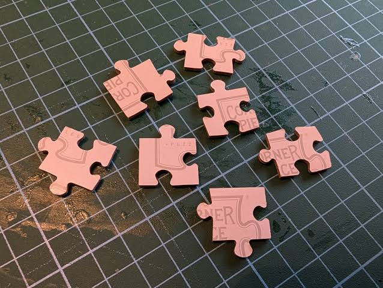

Preamble. From Alchemy to Science
In 2017, accepting the NeurIPS Test of Time Award for his work with Ben Recht, Ali Rahimi argued that machine learning had become alchemy: a collection of recipes that worked, without a satisfactory account of why.1, 2 This was a striking departure from the optimism of just a few years earlier, when theory and practice had seemed to be drawing closer together—a contrast Mark Schmidt revisited in his tutorial slides.
Nine years later, Stanford offers CS 312: Deep Learning Alchemy. The title captures something about the field’s practical priorities. When training large models, an intuition that lets you predict the outcome of an experiment before you run it can be more immediately useful than a theoretical explanation of the phenomena involved.
But what would it mean to close that gap? Heisenberg put the challenge well:
“The exact sciences start from the assumption that in the end, it will always be possible to understand nature, even in every new field of experience, but that we may make no a priori assumption as to the meaning of ‘understand’.”
Werner Heisenberg
The difficult word is understand. If someone can reliably predict how a model will train, in what sense have they understood it? Practical intuition is a real achievement. Yet being able to anticipate an outcome does not necessarily mean being able to explain why it occurs, when the prediction will fail, or how the same principles apply elsewhere.
I am not even sure how much of this intuition can currently be automated. The difficulty of turning experience into reliable reasoning about new training runs may be one obstacle to AI systems improving themselves recursively. Perhaps there is some comfort in that difficulty. At the very least, hard-won expertise in training models provide a moat for new AI startups. It is also one reason I am sceptical of the claim that AI can simply write any software: generating code does not by itself supply the intuition needed to train a model or tune an optimiser. As scientists, though, we should still want to overcome this difficulty. Seeking the truth is part of the ethos of science, and I believe a deeper understanding of learning could help us govern both AI systems and the companies that build them. As Heisenberg reminds us, we should remain open about what understanding might look like while pursuing it with determination. This primer begins in that spirit.
As Grandma always says, start with the corner pieces

When solving a jigsaw puzzle, start with the corner pieces. In science, their counterparts are minimal models—less affectionately called “Mickey Mouse models”, at least among physicists. These deliberately simplified models often isolate an extreme or limiting case to expose a key aspect of the phenomenon we want to understand. They help us find counterexamples that can save us from pursuing a bad idea, disentangle effects that are difficult to separate in a more complex system, and sharpen our thinking. More frankly, they help us focus on the science without getting lost in complicated mathematics, serve as sanity checks (akin to unit tests) for more complex models, and provide useful teaching examples.
This approach of using mathematical idealisations to study phenomena has a rich history. Galileo was a pioneering champion of it. He advocated a mathematical approach to nature in The Assayer (1623) and used idealised systems to develop his account of motion in Two New Sciences (1638). By setting aside complications such as friction and air resistance, he could isolate relationships that were difficult to discern in everyday experience. His work helped lay the foundations of kinematics and contributed to the development of the principle of inertia. One could argue that this approach helped set the Scientific Revolution in motion.
To my ear, some objections to a science of deep learning echo the doubts raised against Galileo’s new science of Physics. Indeed, to address possible accusations of physics envy, I will explore this in a separate essay. In the spirit of Galileo, I hope this collection can contribute, in a small way, to a scientific revolution in deep learning. My role is chiefly to make the work of researchers far more knowledgeable than I am more accessible. The writing comes in three forms:
- A Taster is written for first-year undergraduates, with the aim of remaining accessible to interested high-school students.
- An Appetizer is written for early-stage graduate students, while remaining accessible to senior undergraduates.
- A Main is written primarily for active researchers in the field.
I hope these pieces offer useful introductions to the field and encourage readers to ask new questions, develop new ideas, and pursue work of their own.
Taster series
Singular Learning Theory
Figuring out how neural networks generalise to unseen data.
Read the Taster →Footnotes and further sources
- Ali Rahimi’s Test of Time Award presentation, Conference on Neural Information Processing Systems, 2017. Watch 7:20–8:10, then 11:00 onwards. ↩
- Yann LeCun’s rebuttal and the ensuing discussion. Also see the debate in the Facebook comment thread; it is a little messy to follow. ↩